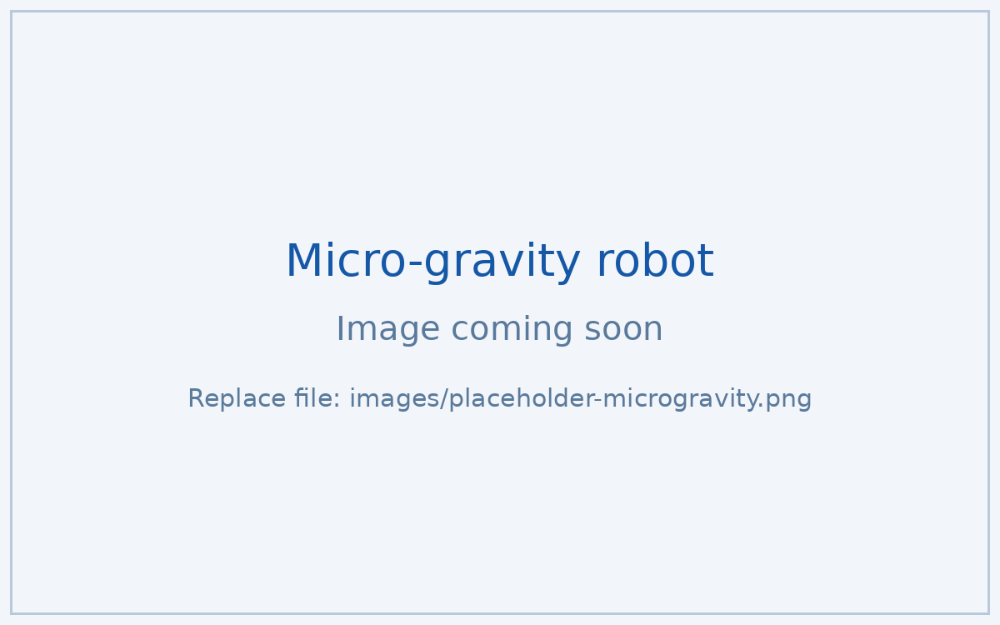

微重力机器人与双臂操作平台
角色与核心贡献
面向两个实验室平台的机械设计与仿真——ATMOS 开源版本与 RRL M3 双臂操作平台。
- 主导 ATMOS 开源版本的机械评审与结构重构，提升发布设计的可靠性与可制造性；
- 重构 RRL M3 双臂操作平台，优化机械布局的整洁度与稳健性；
- 搭建 MuJoCo 工作空间分析仿真，验证可达范围与构型。
概述
在 NYU 的 Riviere Robot Lab，我参与两个平台的工作：准备开源发布的微重力机器人 ATMOS， 以及 RRL M3 双臂操作平台。我的重心是让科研硬件可靠、可复现—— "实验室里能跑一次的机器人"和"别的团队照图能造出来的设计"之间的差距。
我的贡献
- 主导 ATMOS 开源版本的机械评审与结构重构，提升发布设计的结构可靠性与可制造性。
- 重构 RRL M3 双臂操作平台的机械结构，兼顾刚度与可维护性。
- 搭建 MuJoCo 仿真用于人形机器人验证与双臂操作任务的工作空间分析， 在投入硬件前打通 CAD 与仿真的闭环。

相关：该平台上的强化学习实验见
面向操作任务的强化学习。